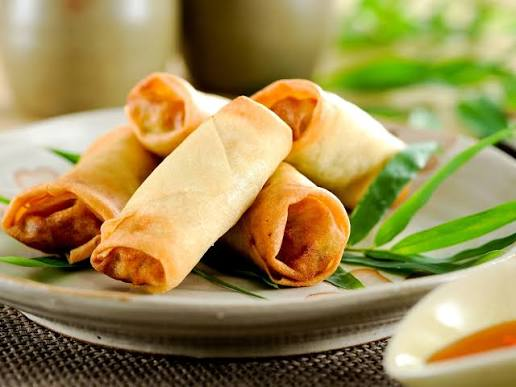

Cha Gio Vietnamese Egg Rolls

Description
These cha gio Vietnamese egg rolls freeze well, so go ahead and make a double batch of the recipe. For a change, add shredded cabbage or julienned taro, or add minced crab to make them even more flavorful.
Ingredients
- 1 cup uncooked bean threads (cellophane noodles)
- 1 large dried shiitake mushroom
- 1 pound ground pork
- 8 ounces shrimp, chopped
- 1 large carrot, peeled and grated
- 1 small shallot, minced
- 2 ¼ teaspoons Vietnamese fish sauce
- 1 ¼ teaspoons white sugar
- 1 ¼ teaspoons salt
- 1 ¼ teaspoons ground black pepper
- 24 egg roll wrappers
- 1 large egg, beaten
- vegetable oil for deep frying
Steps
- Soak cellophane noodles and shiitake mushroom in warm water until pliable, about 15 minutes. Drain well. Mince mushroom.
- Combine noodles, mushroom, pork, shrimp, carrot, shallot, fish sauce, sugar, salt, and black pepper in a large bowl; toss until ingredients are well mixed, evenly distributed, and to break up pork.
- Place 1 egg roll wrapper diagonally on a flat surface. Spread a scant 2 tablespoons pork filling across wrapper center. Fold bottom corner over filling, then fold in side corners to enclose filling. Brush beaten egg on top wrapper corner; continue rolling to seal. Repeat filling and rolling with remaining wrappers, pork filling, and beaten egg.
- Heat oil in a deep fryer, wok, or large saucepan to 350 degrees F (175 degrees C), or until a drop of water jumps on the surface.
- Lower egg rolls carefully into the hot oil in batches. Fry until golden brown, 5 to 8 minutes. Drain on paper towels or paper bags. Repeat with remaining egg rolls.
Home